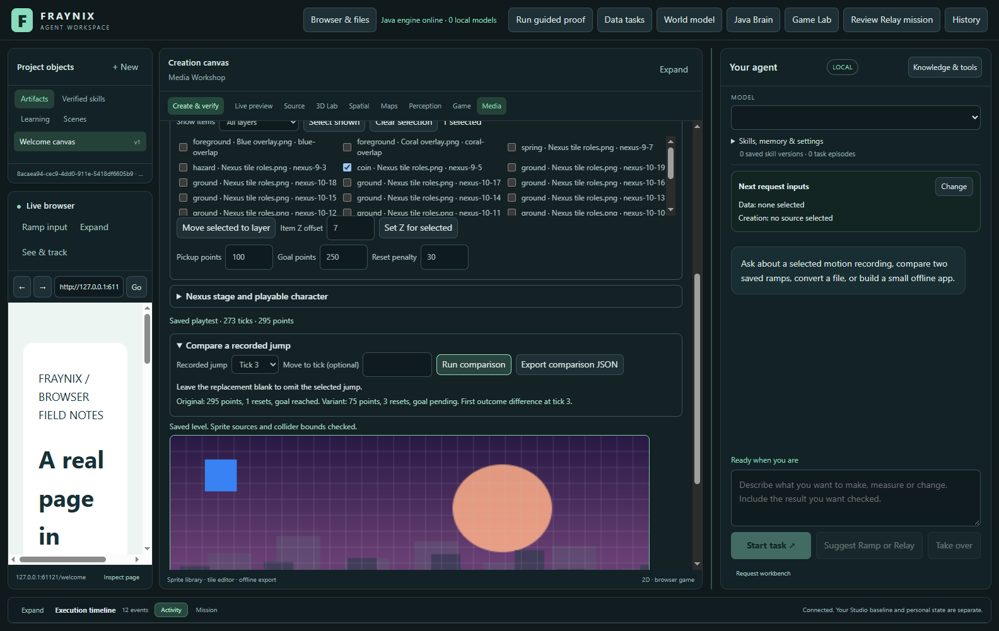
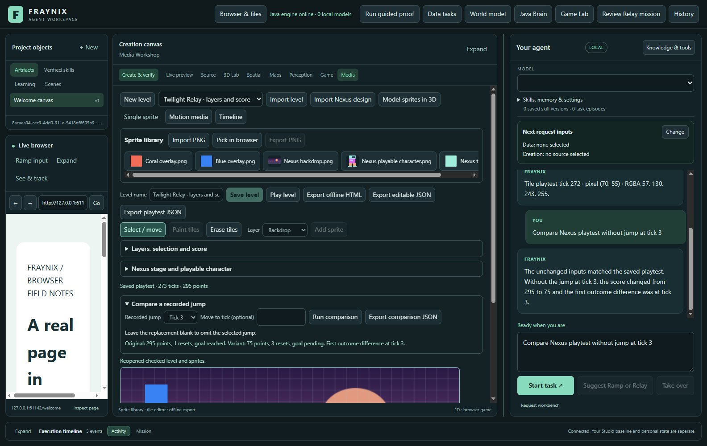
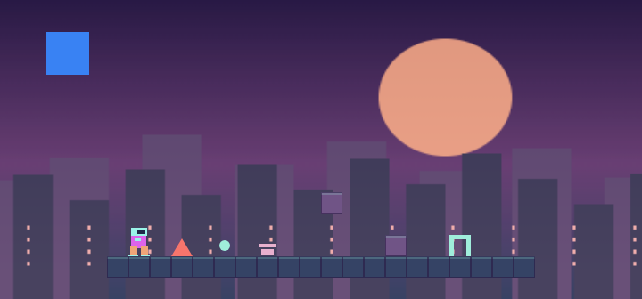

Replay saved controls and compare one change
Compare the stored original with a variant that changes just one jump.

Compare a saved jump and read both outcomes in the Media editor

Offline chat repeats the same measured comparison
Original view at the first changed tick

Variant view at the same tick with the jump omitted
System files
Open source